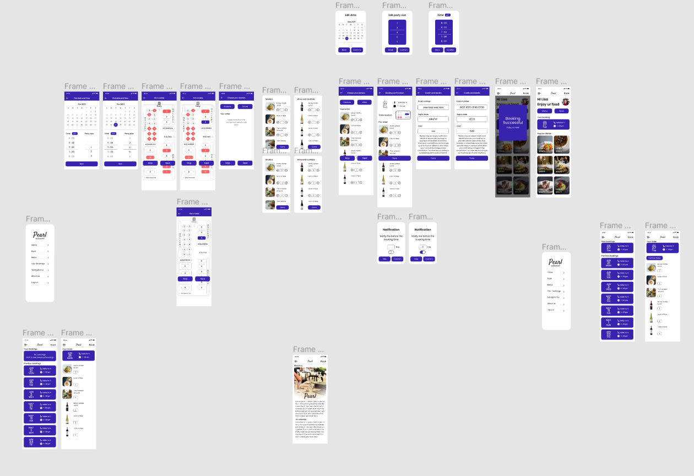
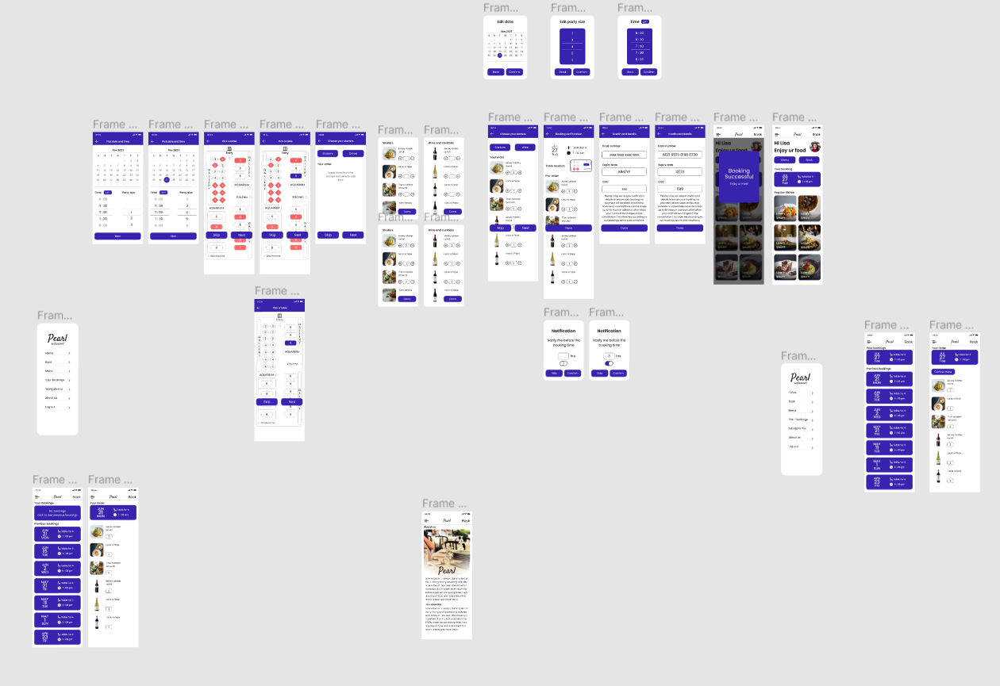

Enabling dinners to book their reservation through the app and giving a more immersive experience in-app.
• User Research: Surveys, Competitive Analysis, Interviews,
User testing, Affinity Mapping
• Storytelling &
Narrative
• UX Design: sketches, Iterative Wireframing,
low and high fidelity prototyping, Testing Sessions
• Solo Project
• Nov 2021 -2 week
• Figma
• Miro

Pearl restaurant is a family business that serves fine luxury food
for hundreds of dinners every day. But with the current evolution of
technology in booking process instead of a regular call to book
service in competitors let to a down spike of dinners in recent
months.
People visiting luxury restaurants nowadays are expecting more not
only from the food and service also from the reservation space of
the whole process. As pearl used its normal means to call to reserve
a table users showed a slight dissatisfaction in user choices due to
lack of Visuality in options that they can have.
As a luxury restaurant, people come to spend time but most customer
visits expect fast service when they are in a hurry upon research,
it was noted that this was the highest service rate that their
kitchen can process currently, but this needs to be resolved so
dinners won't find dissatisfaction.
1. I conducted interviews with 10 participants(4 Male, 4 Female, 2
Nonbinary) and created empathy maps to understand the users.
2. I conducted interviews and created empathy maps to understand
the users I’m designing for and their needs. Primary user groups
identified through research Was affluent families and business
personnel who are striving for the astonishing experience.
3. This user group confirmed initial assumptions about Pearl
Restaurant customers, but research also revealed people are
expecting to have an easy way to have the best experience while
dining. Other user problems included obligations that imply that
they lose the experience when they are hungry and wait for food
when they reach the restaurant.
4. Other user problems included obligations that they are not
happy that they cant choose the table they want to be placed.
• customers visit luxury restaurants because they want to feel special and experience new things, but the process of getting to reserve a table doesn't equally match the customs of the luxury restaurant.
• Customer visits luxury restaurants for many reasons like spending time, enjoying the delicacy of the food, experiencing the high standards of a luxury restaurant, etc. But most visits to a luxury restaurant are from business meets official and unofficial, these group of customers visits luxury restaurants to please their clients or make an official statement. so they expect their visit to be more promising and these groups of people have sensitive schedules.
As restaurants get more dinners it is hard for them to manage fast service on short notice of the order, but customers with a tight schedule can lose their experience due to this..
Customers often want to be seated at a specific table. But most reservations don't allow it and even if they allow it it's harder to convey the information through call. Also, reservation through call doesn't allow the customer to choose from new options because they cant visually imagine where the table is.
Most common restaurants get dinners as families travel from their homes. but as a luxury restaurant, they get dinners traveling from a different location every time because it is not only the family visits people like business groups or friend groups also visit luxury restaurants.


• Research has been done on existing luxury restaurants and websites to gain knowledge on present trends and how they are making user experience better for their customers.
• 5 restaurants have taken into consideration for competitive analysis
1. HIDE
(https://www.hide.co.uk/)
2. Berners Tavern
(http://www.bernerstavern.com/)
3. Winter Garden
(https://www.landmarklondon.co.uk
/dining/winter-garden/)
4. Clos Maggiore
(https://www.closmaggiore.com/)
5. Holy Carrot
(https://www.holycarrot.co.uk/about)
Customers will be able to preorder their starters and wine in -app while reservation so that they get to order their main course while they enjoy their starters without waiting on preparation time.
Enabling users with a live table reservation in-app so that they can visually choose and customize their experience. Most customers want to be seated in a specific location, But they won't be able to choose new options due to a lack of imagination of where other tables will be.
Enabling users with an in-app map feature to locate the user position and redirect them to the restaurant with the shortest path.

• I conducted two rounds of usability studies. Findings from the
first study helped guide the designs from wireframes to mockups.
The second study used a high-fidelity prototype and revealed what
aspects of the mockups needed refining
• Nov 2022 -1 week
Most users want to be able to edit details on the confirmation page
The notify me section is difficult to find for almost all users
For most users, it’s not immediately clear how to cancel the reservation
For most users, it’s not immediately clear how to pre-order food from the list
Choosing a location of the table is useful for most people, but not an overwhelming majority
As per research insights, new adaptations have been made into lofi prototypes to continue with the hifi prototypes.
.png)
Early designs allowed for placing notify me option below order confirmation but after usability study, it was revealed that users are not able to notice that but notify requires more attention than normal because it’s not been used in mass users in the past.
.png)
Most users were confused about how to access the reservation details. previously it can be found when clicking on the hamburger menu after the reservation. So to give more attention, bookings are placed on the main screen.
.png)
Usability study addressed that users are more comfortable if they get to edit in the confirmation page.
 

Main user flow is embedded with immersive experience allowing the user to choose the table they want to be seated in and quick preorder for starters and wine so it will be ready by the customers reach the restaurant .
Users are given a quick way to view their current booking details and can check their previous visit order details.
Most users don't visit the restaurant from the same place every time so they have been given a map feature to find the quickest route to the restaurant.
Every screen is designed following brand identity consistently to give an immersive experience moving through screens.
• While designing the Pearl Restaurant, I learned that the first
ideas for the app are only the beginning of the process.
Usability studies and peer feedback influenced each iteration of
the app’s designs.
• Building empathy for a user population
I did not know a lot about has helped me grow immensely as a
designer.